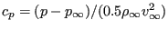
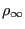

Next: Channel with hydraulic jump Up: Simple example problems Previous: Stationary laminar inviscid compressible Contents
A further example is the laminar viscous compressible flow about a naca012
airfoil. Results for this problem were reported by [57]. The entrance
Mach number is 0.85, the Reynolds number is 2000. Of interest is the steady
state solution. In CalculiX this is obtained by performing a transient
CFD-calculation up to steady state. The input deck for this example is called
naca012_visc_mach0.85_veryfine.inp and can be found amoung the CFD test
examples. Basing the Reynolds number on the unity chord length of the airfoil,
an entrance unity velocity
and a entrance unity density leads to a dynamic viscosity of
. Taking  and
leads to a specific gas constant
and
leads to a specific gas constant
 (all in consistent units). Use of the entrance Mach number
determines the entrance static temperature to be
(all in consistent units). Use of the entrance Mach number
determines the entrance static temperature to be  . Finally, the
ideal gas law leads to a entrance static pressure of
. Finally, the
ideal gas law leads to a entrance static pressure of  . Taking the
Prandl number to be one determines the heat conductivity
. Taking the
Prandl number to be one determines the heat conductivity
 . The surface of the airfoil is assumed to be adiabatic.
. The surface of the airfoil is assumed to be adiabatic.
The results for the pressure and the friction coefficient at the surface of
the airfoil are shown in Figures
38 and 39, respecively, as a function of the shock
smoothing coefficient. The pressure coefficient is defined by
, where p is the local static
pressure, ,
 and  are the static pressure,
density and velocity at the entrance, respectively. The friction coefficient is defined by
, where is the local shear
stress. Both graphs agree quite well with the literature, especially if one
takes into account that the sources cited by Mittal also vary. Notice that the mesh at
the airfoil is very fine. Indeed,
are the static pressure,
density and velocity at the entrance, respectively. The friction coefficient is defined by
, where is the local shear
stress. Both graphs agree quite well with the literature, especially if one
takes into account that the sources cited by Mittal also vary. Notice that the mesh at
the airfoil is very fine. Indeed,  at the boundary of the first layer of
elements adjacent to the airfoil, defined by
at the boundary of the first layer of
elements adjacent to the airfoil, defined by
 |
(2) |
where u is the velocity in x-direction at that position, h is the element
height and  is the kinematic viscosity, reaches the value of 0.2. In
general,no value exceeding 1 is recommended.
is the kinematic viscosity, reaches the value of 0.2. In
general,no value exceeding 1 is recommended.